05. Series And Parallel Circuits
Building Resistor Circuits Using Breadboards, Perfboards, and Terminal Strips
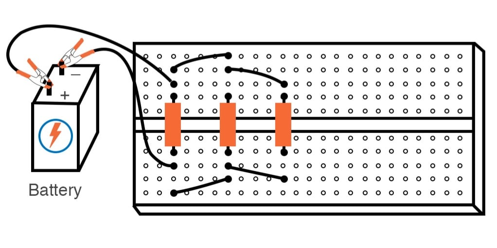
Introduction to Building Basic Electronics Circuits
Solderless breadboards, perfboards, terminal strips, and printed circuit boards are all excellent substrates for building simple electronics circuits. They can be used for production prototyping in commercial envinroments, hobbyist or maker circuit development, and in the classroom for electrical circuit education.
Over the course of learning about electricity, you will want to construct your own circuits using resistors and batteries. In this section, we will explore some fabrication techniques that will help you build the circuits shown in this chapter and more advanced circuits.
Using Alligator Clip Jumper Wires for Circuit Construction
If all we wish to construct is a simple single-battery, single-resistor circuit, we may easily use alligator clip jumper wires, as illustrated in Figure 1.
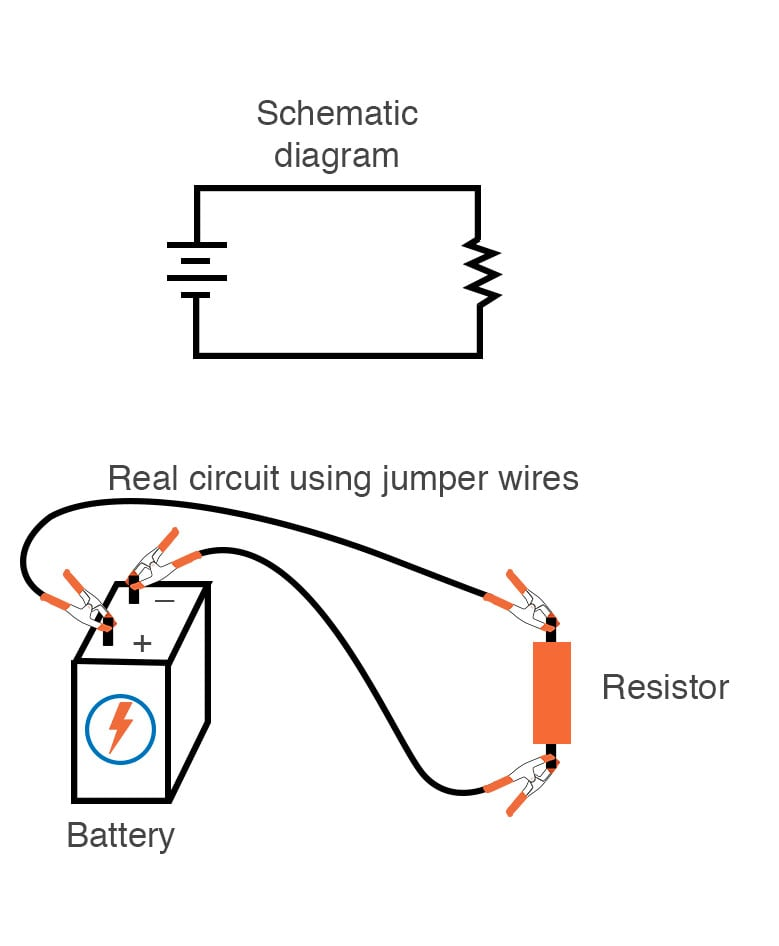
Figure 1. Constructing a simple circuit using jumper wires and alligator clips.
Jumper wires with “alligator” style spring clips at each end provide a safe and convenient method of electrically joining the components together.
On the other hand, if we wanted to build a simple series circuit with one battery and three resistors, the same “point-to-point” construction technique using jumper wires could be applied, as shown in Figure 2.
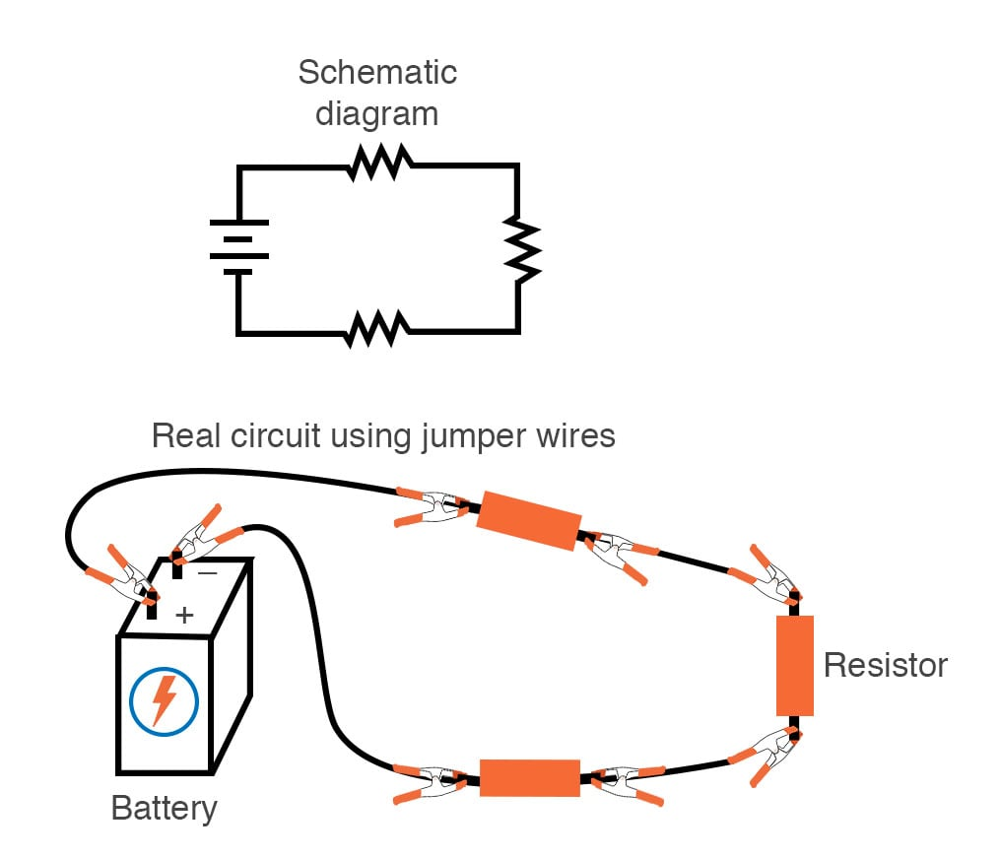
Figure 2. Constructing a three-resistor series circuit using jumper wires and alligator clips.
This technique, however, can prove to be impractical for more complex circuits due to the awkwardness of the jumper wires and the physical fragility of their connections.
Using a Solderless Breadboard for Assembling Electronics Circuits
A more common method of temporary construction for the hobbyist employs the solderless breadboard (often called a breadboard). A breadboard is a device made of plastic with hundreds of spring-loaded connection sockets joining the inserted ends of components and/or 22-gauge solid wire pieces. A photograph of a real breadboard is shown here in Figure 3, with a standard writing pen shown to provide some context for the approximate size. Below that in Figure 4 is an illustration showing how three resistors in a simple series circuit can be constructed on a breadboard.
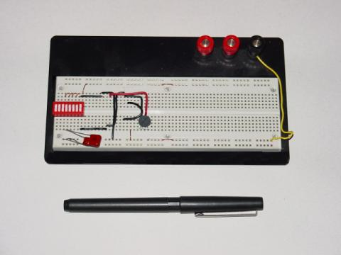
Figure 3. A solderless breadboard used for building basic electronics circuits.
Additionally, Figure 4 illustrates how three resistors in a simple series circuit can be constructed on a breadboard.
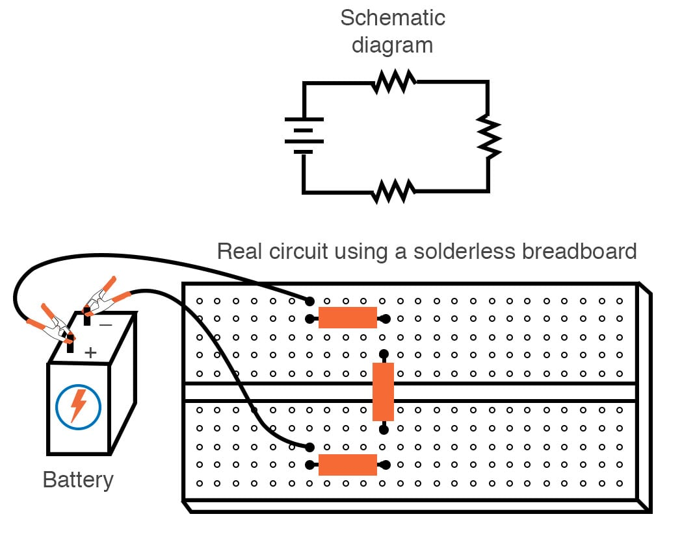
Figure 4. Breadboard component placement and connections for a three-resistor series circuit.
Underneath each hole in the breadboard's surface is a metal spring clip designed to grasp any inserted wire or component lead. These metal spring clips are joined underneath the breadboard's surface, connecting inserted leads. The connection pattern joins every five holes along a vertical column, as shown in Figure 5, with the long axis of the breadboard situated horizontally.
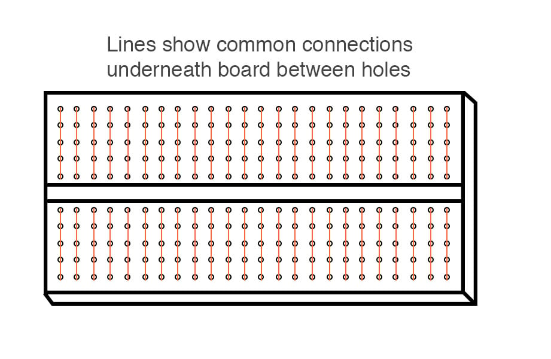
Figure 5. Electrical connections in a breadboard—each five-hole set is electrically connected.
The orange lines in the figure indicate electrical connections between each of the five holes in the set. Each five-hole set is a single electrical node.
Thus, when a wire or component lead is inserted into a hole on the breadboard, four more holes are in that column, providing potential connection points to other wires and/or component leads. The result is an extremely flexible platform for constructing temporary circuits.
Building a Series Circuit on a Breadboard
For example, the three-resistor series circuit implementation on a breadboard that was demonstrated in Figure 4 could also be assembled using the connections shown below in Figure 6.
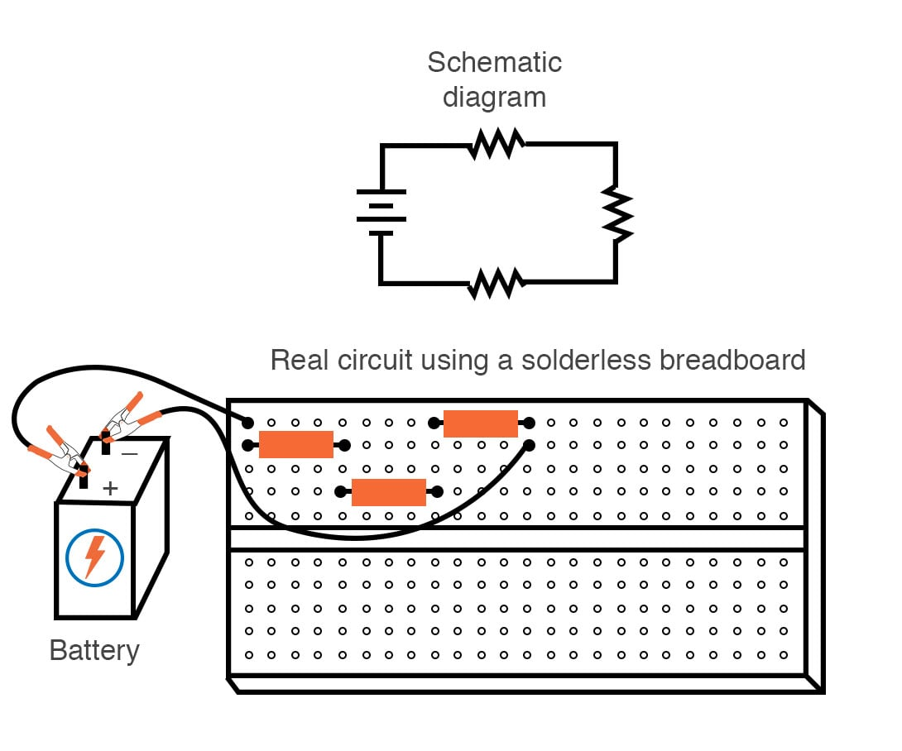
Figure 6. Breadboard component placement and connections for a three-resistor parallel circuit.
Build a Parallel Circuit on a Breadboard
A parallel circuit is also easy to construct on a solderless breadboard. Figure 7 provides one possible construction of a three-resistor parallel circuit on a breadboard.
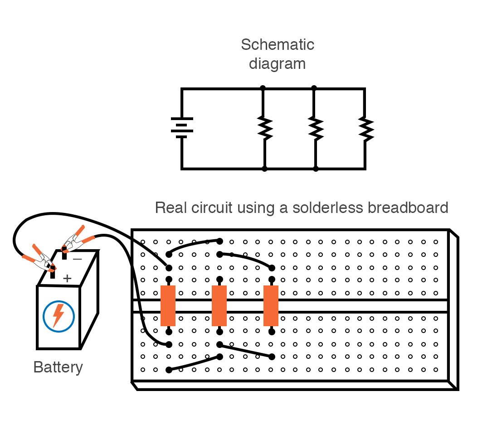
Figure 7. Breadboard component placement and connections for a three-resistor parallel circuit.
Pay special attention to the placement of the resistors across the center gap that runs the length of the breadboard from left to right in the orientation shown. This allows simple insertion of the resistors in the vertical orientation while keeping the two electrical nodes of the resistors isolated from each other.
Limitations of Using Breadboards
Despite how easy it is to use breadboards, they have limitations. First and foremost, they are intended for temporary construction only. If you pick up a breadboard, turn it upside-down, and shake it, any components plugged into it are sure to loosen and may fall out of their respective holes.
Secondly, breadboards are limited to fairly low-current (less than 1 amp) circuits. Those spring clips have a small contact area and thus cannot support high currents without excessive heating.
Soldering or Wire-wrapping
For greater permanence, one might choose soldering or wire-wrapping, over alligator clips or simple insertion into a solderless breadboard. Soldering and wire-wrapping involve fastening the components and wires to some structure providing a secure mechanical location (such as a phenolic or fiberglass board with holes drilled in it, much like a breadboard without the intrinsic spring-clip connections) and then attaching wires to the secured component leads.
Soldering is a form of low-temperature welding using a tin/lead or tin/silver alloy that melts and then solidifies to provide a mechanical and electrical bond to the copper on the circuit board's surface.
On the other hand, wire wrapping is when a small-gauge wire is tightly wrapped around component leads rather than soldered to leads or copper pads. The tension of the wrapped wire provides a sound mechanical and electrical junction to connect components together.
Printed Circuit Boards (PCBs) or Perfboard
An example of a printed circuit board, or PCB, typically intended for hobbyist or maker use is shown in the photograph of Figure 8.
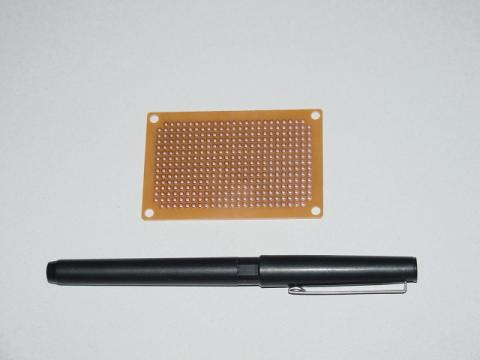
Figure 8. PCB perfboard for electronics circuit assembly.
This particular type of PCB is often called a perfboard or perf board. It has holes at regularly spaced intervals, like the solderless breadboard, for easy component placement.
Figure 8 shows this example perfboard copper-side-up; the side where all the soldering is done. Each hole is ringed with a small layer of copper metal for bonding to the solder. Some perfboards have copper rings on both the top and the bottom so that the soldering can be done on both sides.
Unlike the solderless breadboards discussed above, in which holes are electrically connected in groups of five, all of the holes on a typical perfboard are independent of each other. However, PCBs with the same 5-hole connection pattern as breadboards can be purchased and used for hobby circuit construction.
Aside from that, production PCBs have traces of copper laid down on the phenolic or fiberglass substrate material to form pre-engineered connection pathways that function as wires in a circuit. An example of such a board is shown in Figure 9.

Figure 9. Example of a PCB with components and wires assembled to the board.
Figure 9 is an AC-to-DC power converter circuit designed to take 120 V alternating current (AC) power from a household wall socket and transform it into a low-voltage direct current (DC). A resistor appears on this board, the fifth component counting up from the bottom, located in the middle-right area of the board.
Figure 10 shows this board’s underside, revealing the copper traces connecting components together, as well as the silver-colored deposits of solder bonding the component leading to those traces.
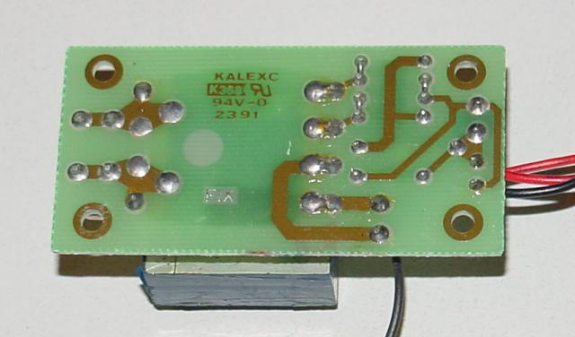
Figure 10. Example of a PCB showing printed copper traces and component solder connections.
A soldered or wire-wrapped circuit is considered permanent, that is, it is unlikely to fall apart accidentally. However, these construction techniques are sometimes considered too permanent. If anyone wishes to replace a component or change the circuit in any substantial way, they must invest a fair amount of time undoing the connections. Also, both soldering and wire-wrapping require specialized tools which may not be immediately available.
Terminal Strips
Another alternative construction technique used throughout the industrial world is that of the terminal strip (Figure 11).
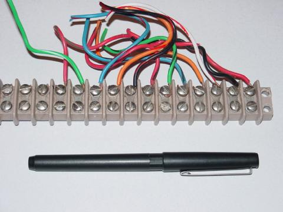
Figure 11. Terminal strip with electrical connections held in place with machine screws.
Terminal strips, alternatively called barrier strips or terminal blocks, are comprised of a length of nonconducting material with several small bars of metal embedded within. Each metal bar has at least one machine screw or another fastener under which a wire or component lead may be secured. Multiple wires fastened by one screw are made electrically common to each other, as are wires fastened to multiple screws on the same bar.
Another type of terminal strip is shown in Figure 12.
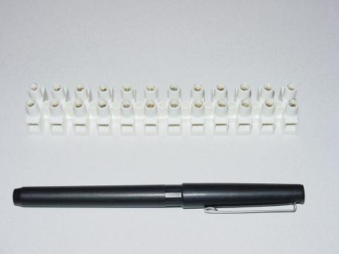
Figure 12. Terminal strip with recessed screws for connections.
This technique, referred to as a “European” style, has recessed screws to help prevent accidental shorting between terminals by a screwdriver or other metal object.
In the illustration of Figure 13, a single-battery, three-resistor series circuit is shown constructed on a terminal strip.
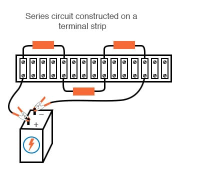
Figure 13. Terminal strip with recessed screws for connections.
If the terminal strip uses machine screws to hold the component and wire end, nothing but a screwdriver is needed to secure new connections or break old connections. Some terminal strips use spring-loaded clips—similar to a breadboard except for increased ruggedness—that are engaged and disengaged using a screwdriver as a push tool (no twisting involved). The electrical connections established by a terminal strip are quite robust and are considered suitable for both permanent and temporary construction.
Translating a Schematic Diagram to a Circuit Layout
One of the essential skills for anyone interested in electricity and electronics is to be able to “translate” a schematic diagram to a real circuit layout where the components may not be oriented the same way. Schematic diagrams are usually drawn for maximum readability (except those few noteworthy examples sketched to create maximum confusion), but practical circuit construction often demands a different component orientation. Building simple circuits on terminal strips is one way to develop the spatial-reasoning skill of “stretching” wires to make the same connection paths.
Translating a Simple Parallel Circuit Into a Circuit Layout
Consider the case of a single-battery, three-resistor parallel circuit constructed on a terminal strip, as shown in Figure 14.
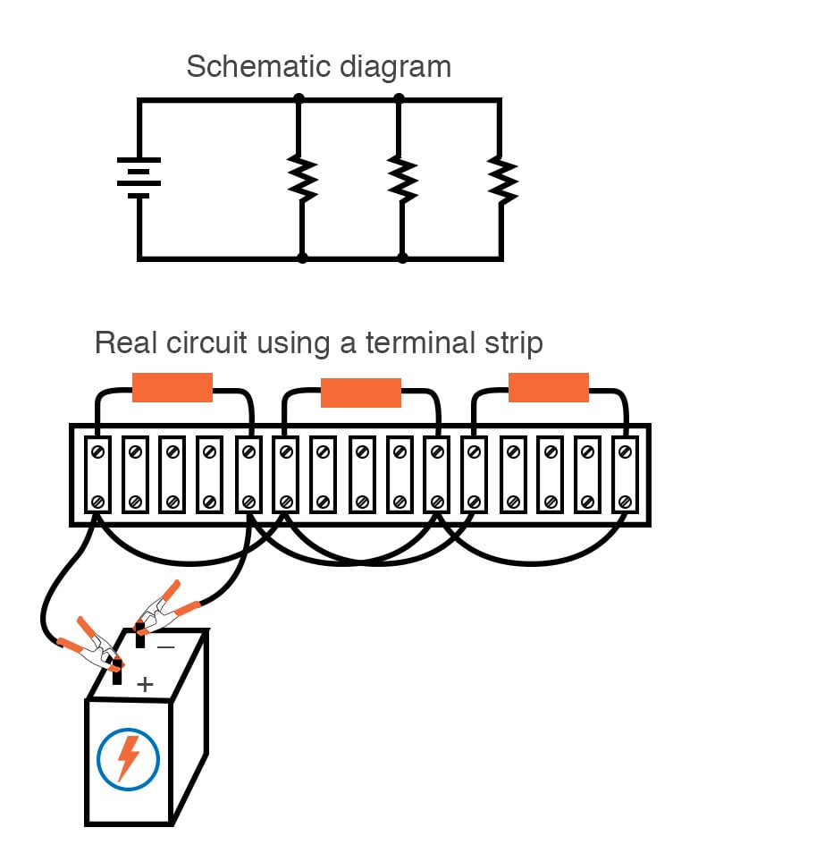
Figure 14. Wiring up a three-resistor parallel circuit using a terminal strip.
Progressing from a nice, neat schematic diagram to the real circuit—especially when the resistors to be connected are physically arranged in a linear fashion on the terminal strip—is not obvious to many, so I’ll outline the process step-by-step.
First, start with the clean schematic diagram and all components secured to the terminal strip, with no connecting wires (Figure 15):
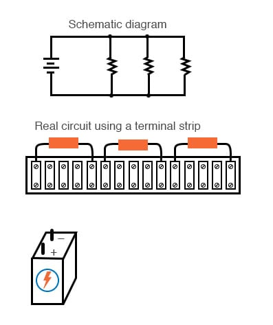
Figure 15. Step 1 of wiring up a three-resistor parallel circuit using a terminal strip.
Next, trace the wire connection from one side of the battery to the first component in the schematic, securing a connecting wire between the same two points on the real circuit. It can be helpful to over-draw the schematic’s wire with another line to indicate what connections are made in real life, as demonstrated in Figure 16.
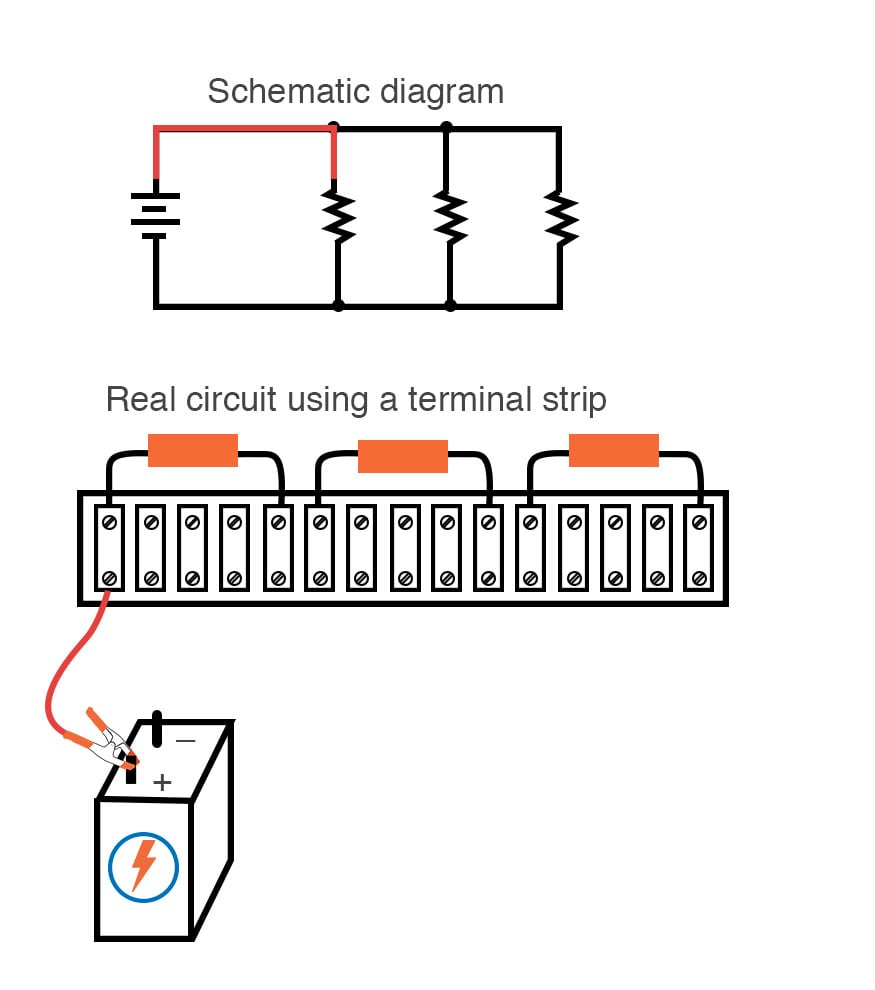
Figure 16. Step 2: Connect the battery's positive terminal to the first resistor.
Continue this process, wire by wire, until all connections in the schematic diagram have been accounted for. It might be helpful to regard common wires in a SPICE-like fashion; make all connections to a common wire in the circuit as one step, making sure every component with a connection to that wire has a connection to that wire before proceeding to the next.
For the next step (Figure 17), the top sides of the remaining two resistors are connected together and in common with the wire secured in the previous step.
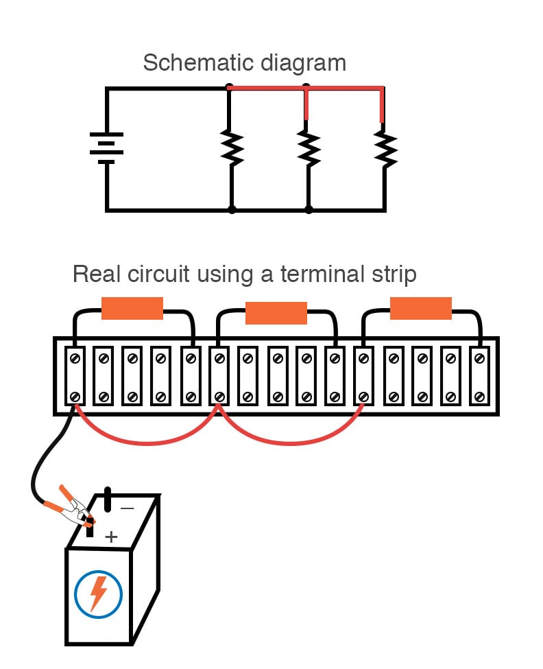
Figure 17. Step 3: Connect the other two resistors to the positive battery terminal electrical node.
With the top sides of all resistors (as shown in the schematic) connected together and to the battery’s positive (+) terminal, all we have to do now is connect the bottom sides together and to the other side of the battery, as illustrated in Figure 18.
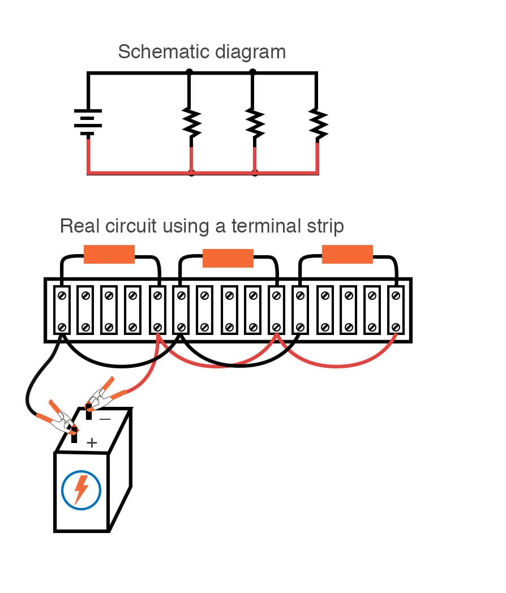
Figure 18. Step 4: Connect the negative battery terminal to the opposite sides of the three parallel resistors.
Typically, all wires are labeled with number tags in the electronics industry, and electrically common wires bear the same tag number, just as they do in a SPICE simulation. In this case, we could label wires 1 and 2, as shown in Figure 19.
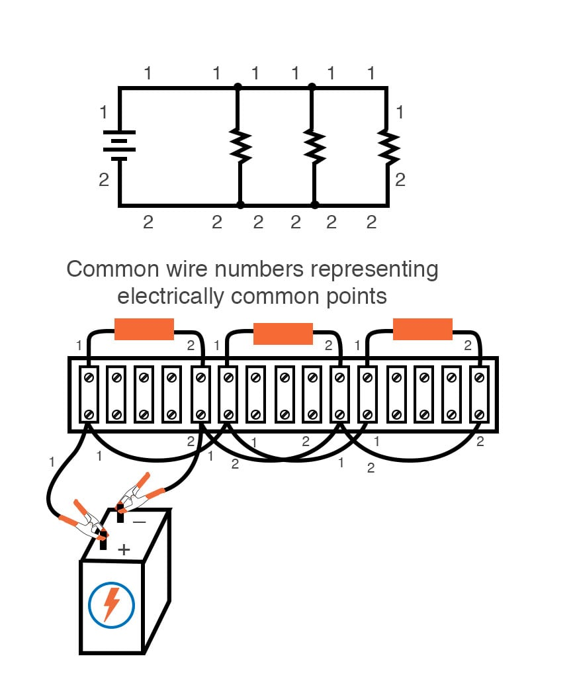
Figure 19. Node numbering of the terminal strip connections.
Another industrial convention is to modify the schematic diagram slightly to indicate actual wire connection points on the terminal strip. This demands a labeling system for the strip itself, as shown in Figure 20.
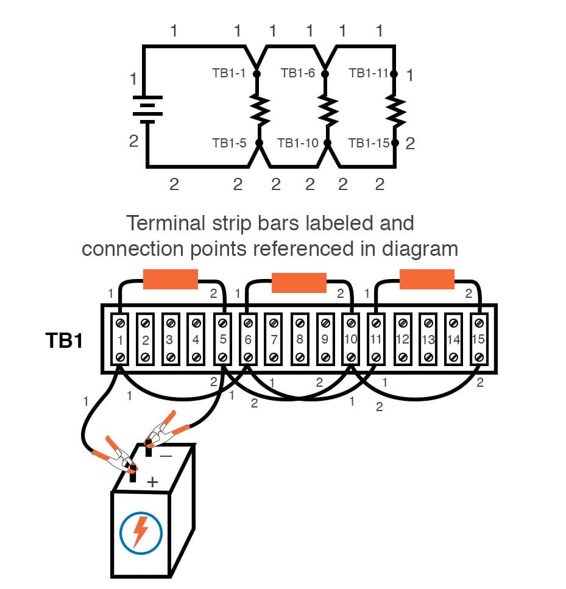
Figure 20. Terminal block numbering technique.
A “TB” number (terminal block number) for the strip has been added, followed by another number representing each metal bar on the strip.
This way, the schematic may be used as a “map” to locate points in a real circuit, regardless of how tangled and complex the connecting wiring may appear to the eyes. This may seem excessive for the simple, three-resistor circuit shown here. However, such detail is absolutely necessary for the construction and maintenance of large circuits, especially when those circuits may span a great physical distance and use more than one terminal strip in more than one panel or box.
Review of Building Electrical Circuits with Breadboards, PCBs, and Terminal Strips
- A solderless breadboard is a device used to quickly assemble temporary circuits by plugging wires and components into electrically common spring clips arranged underneath rows of holes in a plastic board.
- Soldering is a low-temperature welding process utilizing a lead/tin or tin/silver alloy to bond wires, and component leads together, usually with the components secured to a fiberglass board.
- Wire-wrapping is an alternative to soldering, involving small-gauge wire tightly wrapped around component leads rather than a welded joint to connect components together.
- Perfboard is a type of printed circuit board (PCB) that can be used for quickly assembling circuits with solder connections.
- A terminal strip, also known as a barrier strip or terminal block, is another device used to mount components and wires to build circuits. Screw terminals or heavy spring clips attached to metal bars provide connection points for the wire ends and component leads. These metal bars are mounted separately to a piece of nonconducting material such as plastic, bakelite, or ceramic.